Consciousness can migrate about in and out of the physical world. A truly advanced civilization and culture recognizes this fact. For us to grow as humans we must also recognize this fact.
For me to perform my operations relative to MAJestic, I needed to migrate my consciousness. As such, I was exposed to numerous technologies involved in this action. Fundamental to that is an understanding of what soul is. Here, I would like to introduce the reader to the reality of soul. Yes, boys and girls, souls do exist. There is a reason to life.
Of course, this post, like all my other posts, is going to ruffle some tail feathers. Hey, no problem. You can leave if you don’t like what I have to say.
Contrary what you (the reader) might be expecting, I am not going to repackage any of the teachings of the major religions. Nor am I going to point out an approved “scientific” narrative, either. What I am presenting here is what I have learned through entanglement experiences. As such, it can be wrong, because what was taught to me was in error, or it could be wrong because my understanding is faulted. It can also just be a bunch of nonsense. You the reader can decide.
You can read it or not…
Elementary Summary of History
Here is my very simplified explanation as to how Heaven came about. It was pretty simple.
There was a point of beginning. The reader can think of it as “The Big Bang”, but for reasons that I cannot get into at this moment, I think it was something else. Let’s, for now, just consider it “The Start”. It was very similar to the “Big bang” in that there was nothing, and then there was something.
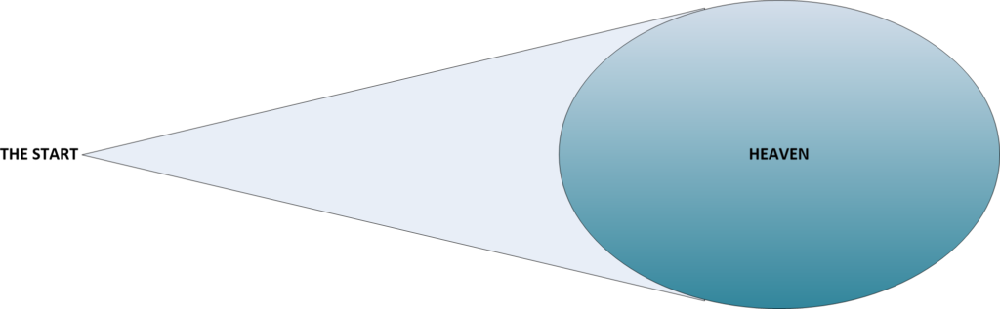
When the “The Start” erupted, the universe was flooded with quantum strings. Over time, the quantum strings began to interact with each other. They developed into different forms and shapes. They also developed into different energy states. Within this place were all sorts of these weird quantum strings. Over time, as they interacted with each other, they created a stratified place. (In the picture above, this stratified place is shown as a color gradient.) The different energy states and different behaviors of the quantum strings occurred within a strange reality. It is one that our minds cannot grasp. It is a reality where there just isn’t anything known as time, and anything known as space. It was, for lack of a better word, a “place”. It is NOT the universe.
That place can be considered to be “Heaven”.
At this time, nothing existed except the presence of the quantum strings.
Since it was stratified by energy potential, certain combinations or configurations of strings started to “drop out” or “fall into” a state of comfort or stability. They did so suddenly, as if on cue. The lowest or less energetic of the quantum strings found a point of stability and created a “bubble”. All of the lower order strings migrated towards that “bubble”. We call this event ‘The Big Bang”.
Now, many scientists wrap the “Big Bang” together with “The Start”. It is as if, they were one and the same. Maybe they were. I don’t know. What I do know is that the “Big Bang” came after the formation of “Heaven”.
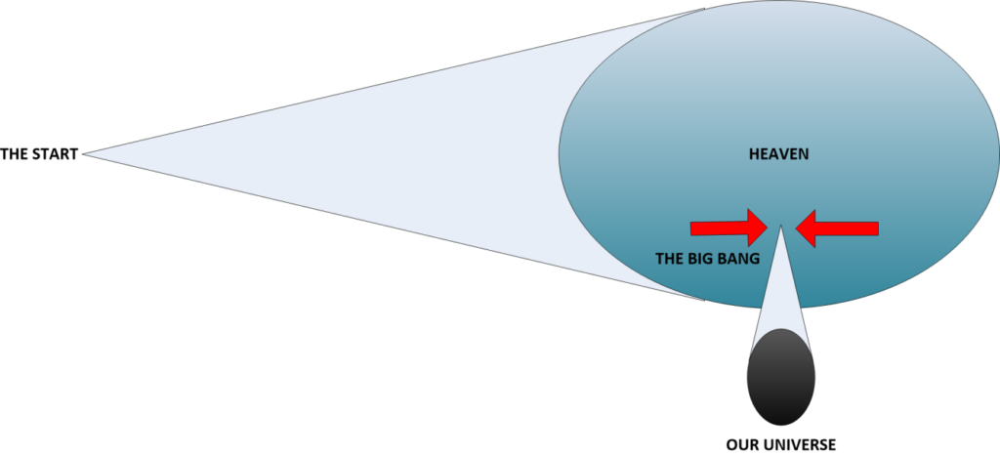
We exist within this “bubble”. To us, it is all that there is. It is the universe as we observe it. The highest energy potentials are beyond range of our human ability to perceive.
What is not clear to us, but should be obvious, is that other collections of quantum strings formed other bubbles. In many ways, these bubbles were similar to the one that we now consider to be our universe. However, that is where the similarity ends. These other bubbles or “other universes” are all different from ours in strange and unusual ways.
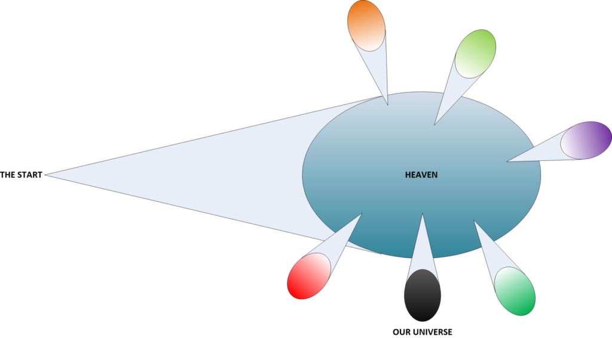
Just as the slower and denser arrangements of quantum, strings precipitated out and became our universe. Other collections of quantum strings arranged themselves into new orders and migrated into other “bubbles”.
Many collections of quantum strings formed “arrangements”. They fell into ordered shapes. They became ordered quanta. As such, over time they began to develop sentience. As such, they migrated into bubble “universes” that was attractive to them. For humans, when the quantum strings began to form a human-like sentience, they all migrated to a new “bubble universe”. For lack of a better term, I call this universe the “Human Universe”. And, for lack of a better term, I call the parent Heaven as the “Zone of Unordered Quanta”.
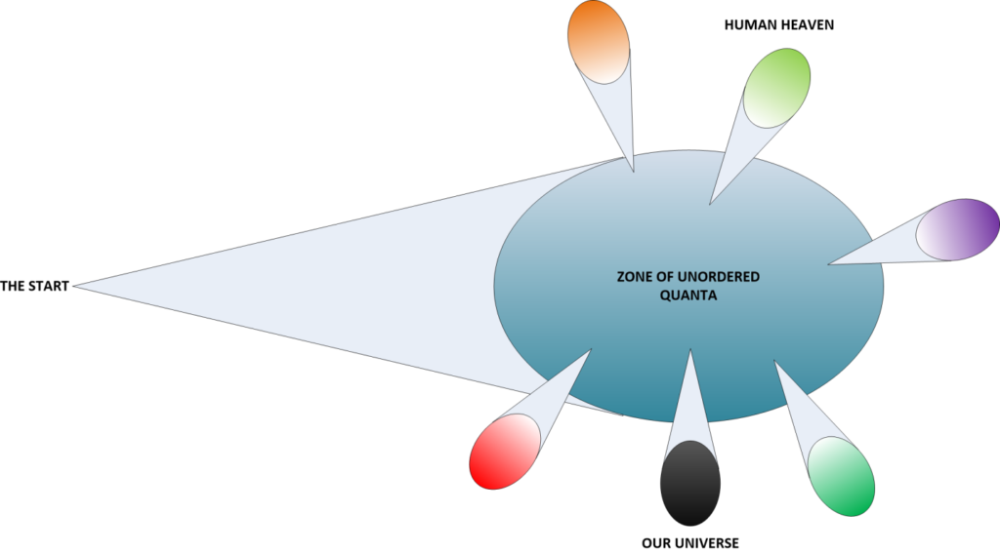
This is the way the universe works. Our physical bodies reside within a physical universe. Our souls reside within a “Human Heaven”. We know that there are other “Heavens” for different types of sentience. There is a “Dog Heaven”. There is a “Cat Heaven”. There is even a “Turtle Heaven”.
The Human Soul
Most Americans know what a “soul” is, though they would be hard pressed to explain it. The problem with this is that it is difficult to describe and measure in three-dimensional Newtonian terms. That is because the mathematics of how the brain functions describe a multi-dimensional existence (more about this later.).
I think that everyone, including the reader, must understand the reality of soul. They must understand that it has form. That it also has a function and features that can be defined and measured if one has the proper tools and equipment. It’s not some kind of imaginary spiritual feel-nice flowery “stuff”. It is a major component of who and what we are. Just because we, today, are having trouble pinning it down today does not mean that it will always be impossible to do so. We, as humans, just simply don’t have the proper equipment yet to do so.
The soul is quite real.
We are having trouble trying to detect it because it does not reside within our physical reality. It exists outside of our reality. The only thing that we can detect is our consciousness. Luckily, for us, our consciousness is a part of our soul. They are intimately connected.
The Soul Resides within Heaven
The (human) soul exists in a higher dimensional state, which we commonly refer to as “Heaven”. (From now on, I will use shorthand notation. “Heaven” will always refer to “Human Heaven” unless specified otherwise.) It does not exist in the physical world. Instead, it creates a “connection” or “link” to the physical world. The link or connection is our consciousness.
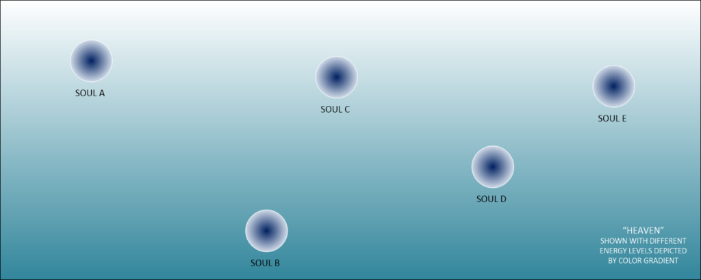
Souls exist in “Heaven”. In the illustration above, it is clear that while all souls exist within a “Heaven”, they are NOT equal. They occupy different energy states or states of being (ability). In the picture above, soul B has a coarser or denser energy level compared to that of soul A. That does not mean that soul A is “better” or “more spiritual” than soul B. It simply means that they are different.
Those differences between the two souls are meaningless. It holds no understanding for us as physical beings existing as we do, within our physical reality.
In truth, there are numerous characteristics of a given soul. These characteristics are defined how the “stuff” that souls are made out of (ordered quantum strings), interact with the “stuff” that Heaven is made out of (unordered quantum strings). Thus, we have different energy potentials, different entropic states, different sizes, different arrangements of quanta, and different resultant post-formulation self-constructions.
Heaven
No one (human) really knows exactly what “Heaven” is. For our purposes, we shall keep it simple. “Heaven” is state of existence that lies outside of our physical reality. Its dimensions, shape, composition, and limitations are unknown to us.
Thus we know of two states of existence. There is the one state that we reside in. It is our reality. It is all that we know. Then, there is a second state of existence. It lies outside of our reality. We know nothing of this state, except that it exists.
How do we know that it exists? Because we, as consciousness, know and understand that there is something “out there”; something bigger and grander than the reality that we exist within. We don’t know anything more than that. We just know that there is something “else” once our physical body dies within this reality.
While we do know that Heaven is composed of unordered quanta, we do know that it is self- segregated. We do know that within “Heaven” are states, or “levels” of existence. Some might refer to this as “energy levels”, “power”, “entropy”, “purity”, or some other means that would help express the concept of Heaven to us humans. Some religions break these regions into “planes”, or “levels” of Heaven. We, as physical mortals do not know what they are. We only know that they exist.
Our minds put these various regions in a two dimensional existence. When in reality, instead of a two dimensional (up and down, with better or “more” spiritual states up top, and lesser states below) there are multiple components regarding this state situation. (The picture above shows the two dimensional concept.) When in reality it might look like something much more complex. (Please see the picture below.)
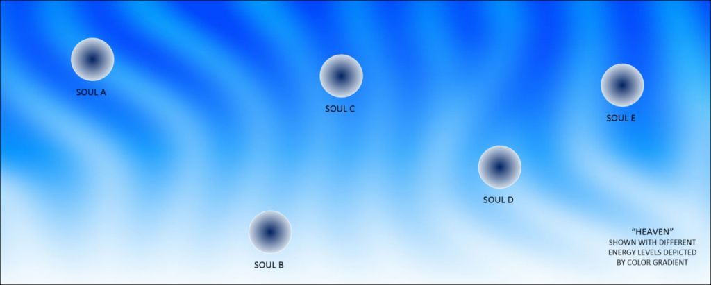
Souls exist in a “Heaven” of unique complexity.
Composition of Souls
Within Heaven are Souls.
Souls are also not well understood. In fact, it is still under debate by many well-learned scientists. For our purposes, we will define both Heaven and Souls to be made up of the same “stuff”. We will define the “stuff”, makeup or composition of both Souls and Heaven to be the smallest and basic elements of the known universe. That is “strings”. Both Heaven and Souls are composed of quantum strings.
To continue, and to greatly simplify, the “stuff” of Heaven can be considered to be “unorganized” quantum strings. While Souls can be considered to be “ordered” or “organized” quantum strings that have obtained sentience. Within this environment, souls with the proper experience and training, can take unordered quantum strings and create order.
Unordered Quantum Strings + Experience = Ordered Quantum Strings
Thus, in this most simple explanation of our universe, we have a universe that is composed of ordered and unordered quantum strings, and within this are souls. With Souls consisting of ordered quantum strings that have obtained sentience.
A soul is a collection of quantum strings that have obtained sentience.
Sentience is the first step in growth of a soul. There are many other steps. In order to grow and achieve these other steps or levels, we need to expand soul. This is accomplished by adding and arranging ordered quantum strings.
As stated previously, ordered quantum strings are a consequence of experience.
Realities are Constructs to obtain Experiences
Within the world of Heaven, it is very difficult to configure, compile and grow Souls. Souls grow by attachments and relationships between quantum strings.
In short, it is rather very simple to explain. Souls grow by the attainment of experiences. With each experience, the soul can configure, grow, adapt, and learn.
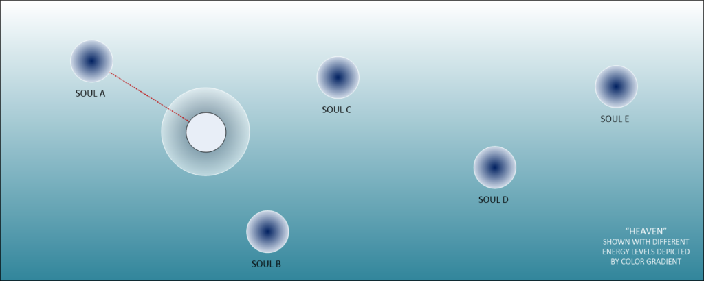
Soul A creates a “Reality” so that it can obtain experiences in.
The reader who might be a “Star Trek, the Next Generation” fan can consider our “Reality” to be a universe-sized “Holodeck”.
Experiences
Experiences, and most especially how we handle them, determine the quantum attachments we make. Therefore, it is very important to watch our behaviors and control our actions. This not only concerns actions, but our thoughts as well. I will cover this in more detail later. For now, the reader just needs to note that thoughts and actions together define the shape our reality takes on. That reality, in turn, translates into the type of quantum entanglements that our consciousness collects.
When our soul collects entanglements via the consciousness, it can use them build upon, create and expand with. In general, the soul wants the best “quality” entanglements. Poor quality entanglements retards growth.
The best way to obtain high quality entanglements is to [1] be active and be outgoing, [2] think good thoughts, [3] be a moral person, and [4] be kind to others (including animals). Intention is everything.
To obtain the largest amount of entanglements, you need to out and be around a lot of people. We, as humans in the physical world, are like huge vacuum cleaners, entangling with everyone and everything we meet. To obtain the highest quality of entanglements, we need to be around good people, in a good environment. Now, we can be around bad people, but we must be good and positive around them. We must not let them affect us in a negative way.
The reader can think of it this way;
You walk down a road at night. A robber mugs you and you hand over your wallet. He leaves. You are one wallet poorer. That entire event was an experience. Like it or not, that experience is now part of who you are.
However, how you react to that experience will determine the shape of the quantum attachments that you collect. If you are angry and hold on to it, the attachment gets courser, and more primitive. You attract other events and people of a similar nature. The longer you hold on to it, the worse it gets. If, however, you let it go. You forget about that event and move on with your life, you will chalk up that experience and benefit from it. It didn’t change who you are, and you have learned from it. It became a positive growth experience and you have benefited from it.
Control of thoughts and actions is there most important thing that we can do on this planet within our reality.
One Reality per Person
There is only one reality per person. It is set up by the soul specifically to obtain experiences from. We do not share our reality with anyone. It only looks that way. We might think that we are sharing it with our loved one. We are not. It is an illusion. We are sharing it with the version of them within our reality.
To facilitate educational growth, Souls create “Realities”. Realities are a classroom that Souls can grow through a surrogate “human” (If you are a human. Different realities exist for different animals.). In each reality (or world-line), there is but one physical reality with but one person existing within it. (This is not what everyone thinks. We all believe that we share our realities. We do not. We share the universal “template”.) The Soul connects to this reality through a mechanism known as “Consciousness”.
This “connection” or “link” is known as consciousness.
Consciousness
Sentience is meaningless in of itself.
Souls can partition their sentience into small groups known as “consciousness”. These smaller elements are set forth to inhabit a physical reality. This is done in order to acquire experiences. Each body that the consciousness acquires needs to have a physical component of sentience. There is no word for this in the English language. Therefore, we are stuck with the confusion resulting from two types of sentience. One is a GOD-level sentience, and one is a physical-level-sentience.
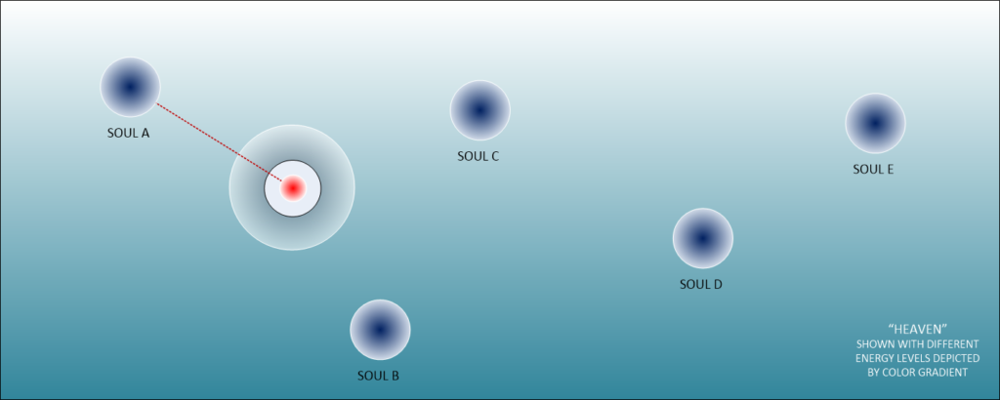
Soul places an “interface” within the constructed “reality”. This is known as “consciousness”.
The consciousness, when it resides within the physical reality can move about freely. It takes on wave behavior. As such, it can move in and out the constructed reality. The reality (of course) has both a physical and non-physical components. The consciousness can move about both quite adeptly.
However, that really isn’t very useful. The consciousness is not able to interact with anything. In order to gain experiences, and attract quanta (it’s like a big vacuum cleaner, don’t you know…) the consciousness must interact with other physical things within the reality construct. The best way to do this is for the consciousness to occupy a physical body.
To occupy the physical body, the consciousness needs to leave the wave state and enter a particle state. Once in the particle state, it can interact with the physical body. It can move the physical body, learn and grow.
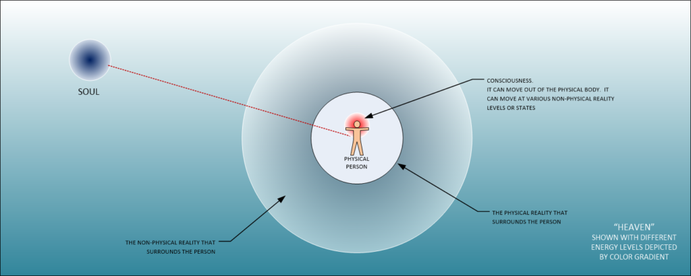
Souls create “Realities” to obtain experiences.
Thus the soul, in this “Heavenly” environment, it creates various “realities” or “bubbles” of realities from which to learn and obtain experiences. Experiences are how souls grow. They collect quantum particles and form them into shapes that create advancement of soul states. When the soul wishes to obtain an experience, it creates a consciousness that it assigns to a physical body within one of the realities.
A soul is NOT a consciousness. A given consciousness is but a small part of a soul that is dispatched into a “reality” to learn and acquire experiences. Consciousness is a part of a soul that is allocated for physical education.
Each reality can be segregated into the physical and the non-physical reality. The physical reality is well known and understood. It is the Newtonian reality that we have all been taught in school. The non-physical reality is (currently) the realm of the “spiritual”. It is the world of the unseen. It is also the home of the spiritual worlds such as evidenced by “astral projection” and the various other planes of existence.
The consciousness is not imprisoned within a body. The consciousness can move within the physical reality so created, or with proper training, enter into the non-physical realities surrounding the reality bubble. It is a matter of changing the quantum state of the quantum particles that form the consciousness component of the soul. (Particle dynamics change to wave dynamics; more about that later.)
However, it is always limited to one specific reality at a time.
Consciousness is a “Passageway”
Consciousness can be thought of as a “passageway”.
We like to think of it as “who we are”. However, that is not what it is. It is something else entirely. So instead of thinking of it as a set being or entity, consider it as a long road. Think of it as a window or path that connects your physical brain to your non-physical soul. As such, your consciousness connects your physical reality to heaven.
It is a passageway.
It is a passageway from your soul to your present reality. This reality is NOT a shared reality that you share with others. No. It is to a specific “reality” that resides within the universe. This reality is but one of the many, many possible combinations of what can, did and will happen in our universe.
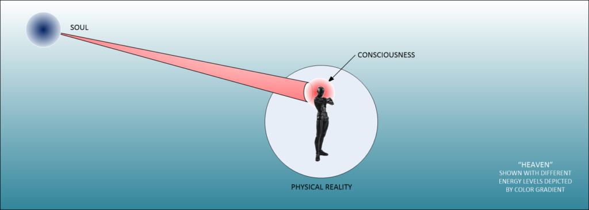
Consciousness should be considered a “Passageway” or “Tunnel” to our soul.
The Universal Template
The universe is, fundamentally, a template from which a reality can be constructed from.
This is NOT what we think it is. We consider the universe to be fixed, and never changing. We all think that we all share the same universe at the same time. We do not. That is just what it appears to be while we exist within it. We share the same universal template. From that are spawned various realities as needed.
Individual realities tend to cluster. They are not that dissimilar.
This is both for different souls, and for given particular lessons. For must humans, the realities are constructed from a universal template that centers around the earth. Experiences are drawn from different variations of experiences in different time periods. Yes, so the idea that we all share the same experience in the same place at the same time is wrong. It only appears that way.
The universal template consists of every single human, and every possible action that they were involved in, from the earliest dates to the end of humanity. The soul selects individual realities out of this universal template. It then positioned a consciousness within a physical body, which lies within a reality drawn from this physical template.
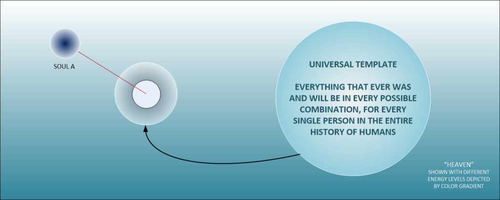
Your reality is spawned from the Universal Template.
As such, a reality can be mixed up and taken at random as needed. It does not need to follow a sequential “arrow” of time. If a given soul needs the experiences of a baker working in Paris in the year 1850, it will construct that reality from the template. Then it will send a consciousness into that reality so to obtain experiences.
Once the experiences, and the lessons, are finished the consciousness leaves the physical reality. It returns home to soul.
If the soul then wants to have other additional experiences (as is often the case), it reinserts the consciousness in another reality that it constructs. Perhaps, it might want to have the experiences of an American aviator fighting in the South Pacific ocean during World War II. It then would spawn a new reality from the universal template. It would then insert the consciousness into that reality. As such, it would then obtain those experiences.
Once the experiences (and the lessons) were finished, the consciousness would leave the body. It returns home to soul yet again.
Now, let’s suppose that the soul wants to have the experiences as a slave involved in the building of one of the pyramids in ancient Egypt. It can most certainly do so. As such, it would pull a reality from the universal template and reinsert the consciousness into that reality. It can do this because “time” doesn’t really exist. It only appears that way to us who are within an extracted reality.
Thus, through continuous manipulation of realities, and the movement of consciousness, the soul grows and rearranges quanta. Each time it improves itself. It keeps progressing and doing so until it can reach the next stage of existence for the soul. (Whatever that might be.)
Putting it all Together
So far, I have introduced the reader to the reality of all there is. The reader should now know what a “Human Heaven” is like, and how it came about. The reader should now also know what the universe is, and how it came about as well. The reader should also understand how souls use the Physical Universe” to select “Realities” from which the soul can obtain experiences.
So, putting everything together, it looks something like this…
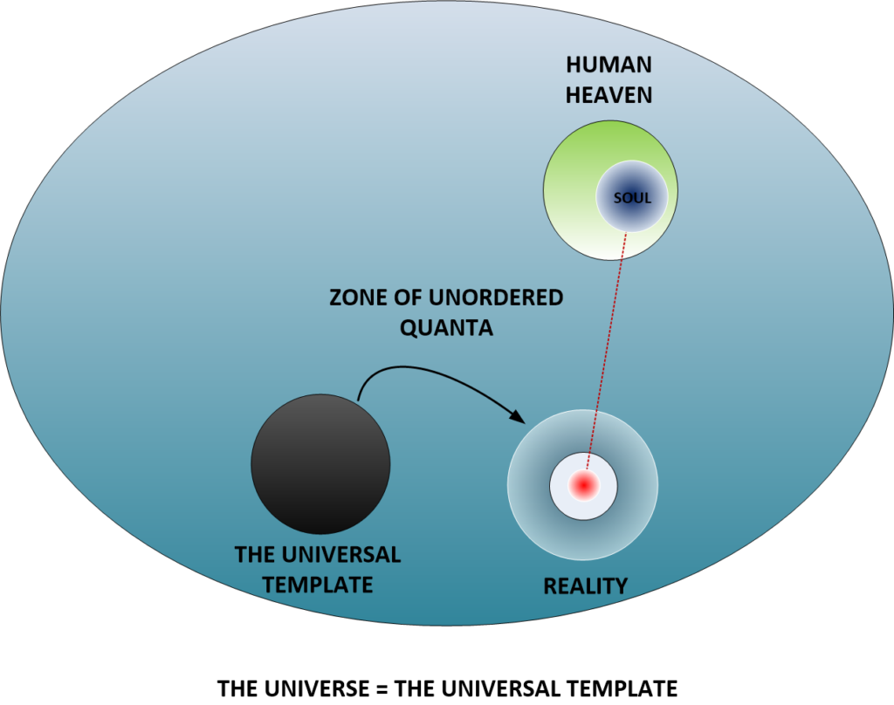
And, ladies and gentleman, that is exactly how the universe works. As you can see it is quite different from what is taught in churches, and in schools. Never the less that is the way it is.
A brief set of summaries are in order;
- Heaven is a place that best suits a set of organized quanta that has obtained sentience.
- As such, there is a Heaven for each creature that has obtained sentience.
- Heaven was created by the “Big Bang” after an event which I refer to as “The Start”.
- Our souls exist in Heaven.
- They create “realities” so they can obtain experiences.
- Experiences allow souls to organize unorganized quanta and thus grow and advance.
- We do not share realities.
- Each reality is unique to the consciousness that inhabits it.
- Because each reality is unique, we as consciousness can change it…
From which I would like to segway to some aspects of my role within MAJestic; World-Line travel.
World-Lines
The idea of world-lines is a very simple concept in regards to this.
There are a (near) infinite number of world-lines that a consciousness (person) can experience. However, it is only beneficial for the person to experience a different world-line as long as it guarantees the same level of learning (of the Soul) will be obtained.
A “world-line” is a variation of a reality that a consciousness inhabits.
There is NO physical movement from one world-line to another. It is after all, the same reality bubble. (The reader is advised NOT to get confused in this regard. Some of the illustrations might give that impression. It is not the case. In the absolute reality of the soul, world-line travel is not really travel at all. Instead, it is a change in the composition of reality.) What changes are the entropy presets that are associated with the reality bubble. More about this later on.
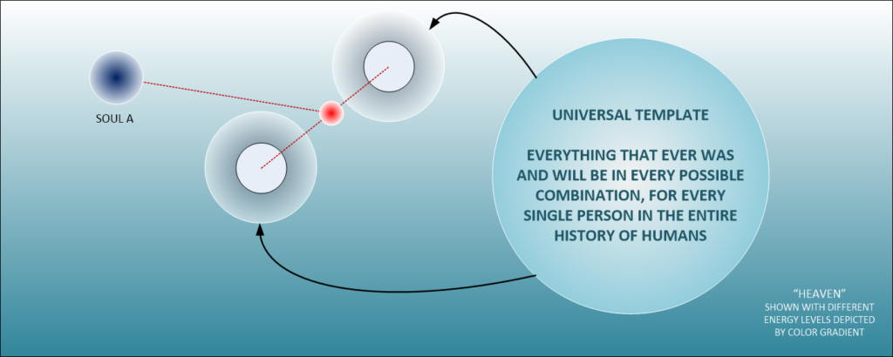
Consciousness can migrate from one reality to another reality. This is commonly known as world-line travel. The consciousness would migrate from one world-line reality to another world-line reality.
The only benefit in the migration is relative to the experiences that soul can obtain. For now, in this section, let’s keep our focus on the human soul as viewed by a human within a bubble reality.
In the above picture we can see that a person is living within a reality. The soul then decides to move or migrate the consciousness to another reality. It can happen ONLY as long as the experiences are similar or “better”. So the reader can imagine that he / she is living within a reality where they are a taxicab driver in New York City. If the soul wanted to, or if the conditions and technologies were acceptable, the consciousness of the taxicab driver could migrate to a world-line where he is the CEO of an Ice Cream company in Hartford, CT.
Consciousness migration can change EVERYTHING within that reality.
Typically, in the “real world” (the reality that I happen to inhabit at this point in time), most contemporaneous world-line travel is limited by the technologies utilized. These technologies limit the travellers to world-lines were they share the same (approximate) physical body. If you are a white male named “Fred” in the first reality, you will move to a new reality where you are still a white male named “Fred”.
By changing certain defaults and energy settings an entire world of change can manifest during world-line travel. This is typically known as a “Level Three” migration. It’s not for the faint of heart, however. When the vector coordinates change radically, so can find yourself in a new environment with little in the way of commonality. You might leave the first reality as a “Fred” and enter the new world-line reality as a “Susan”. While your memories won’t change (they are stored in the non-physical reality) yourself within the new reality might take some getting used to.
Types of World-Line Migrations
There are numerous ways that world-line migration can manifest for us humans. I know of only five ways. Most of them are beyond the capabilities and experiences of most humans as they require specialized equipment, and training to conduct.
Typically, the most common changes are rather simple.
Level Zero Migration
The most common, and simple migrations are achievable by everyone. That means YOU, the reader. You can manifest these changes yourself. These are “Level Zero” migrations. Here the alterations are very simple and hardly noticeable. They take time to manifest. Typically six months to three years. Nevertheless, if you are careful and persistent, they will always manifest. These are changes in the reality of less than a fraction of a percentage. For instance;
- Slight alterations of friends and nearby people’s behaviors
- Changes in the reality that surrounds you physically.
- General alterations in people, places and things.
- Specific alterations in furniture, money, luck or skill
- Minor changes in weather
As such, these changes help to bring about desired experiences and lessons. They are but “tweaks” that are useful in obtaining the necessary experiences that a given consciousness needs. Most consciousness’s experience these kinds of tweaks due to subconscious direction, or verbal affirmations that directs the individual power of intention. Level zero migrations are achievable by everyone and do not require any technology to accomplish.
The power of prayer is a “level zero” migration.
Most people do not know how to pray. They ask for things. That is not how to pray. You must visualize what you desire to alter. Then impress it with emotion. Perform this ritual for a set period of time, maybe ten minutes every day for two weeks or something similar, and then release it. Let it go. It will manifest… eventually. Don’t wait for it.
As such, it is very powerful. Just because it is classified as a “Level zero” migration, does not diminish it’s significance. This, of course, only pertains to self-prayer. Or, prayer that is directed to the person making the prayer. Prayer directed outwards is another issue altogether and another thing entirely. It does not work. The only types of prayer that will manifest for you is ones directed at you, by you.
Level One Migration
However, given mastery of certain (assistive) technologies, a consciousness with a given reality can migrate automatically and autonomously. This can be considered a “Level One” migration ability. This can accomplish greater experiences and learning exercises.
It does requires technology to accomplish. That means an actual machine.
There is a lot of this going on. Those that possess this ability typically waste it on “time travel” activities. Which is pretty silly when you really think about it. As such, the person so empowered can change the following attributes during reality migration;
- Geographic location
- Date and time
- Weather
- Culture
These are the most common changes during world-line travel. But that is only because the changes and influences were small. Here a person can go back in time (apparently) and return (apparently). These changes will have corresponding alterations in culture and society the greater the delta deviation from the baseline to the origination point is. Any changes will alter their reality. It will not alter your reality as you are occupying a different reality.
Now, when a person gets involved in level one migration they can (possibly under certain conditions) enter realities where other “versions” of themselves might share the reality. This can include examples of older or younger versions of yourselves. This can included examples of different versions of yourself. This type of migration can certainly get very confusing.
Level Two Migration
“Often people claim to remember past lives; I claim to remember a different, very different, present life. …I rather suspect that my experience is not unique; what perhaps is unique is the fact that I am willing to talk about it.” -Philip K. Dick
To obtain large-scale experiences and radical changes, much greater deviations can occur. Here, a person (Consciousness) can migrate to far different realities. This would be a “Level Two” migration ability.
Like a Level One migration, technology is required. However the technology level is similar. What differs is the manipulation of the target coordinates. It is much more comprehensive and complex.
This is the most important type of world-line travel, as the benefits to consciousness is the most advantageous. However it is also the most dangerous, as the risks are quite large. Here, we can add the changes of;
- Revised historical pasts (What if Hitler won World War II…)
- Altered cultural and scientific advancements (What if McDonalds was a car wash…)
- Changed behaviors and cultural norms (What if people rubbed their butts instead of shaking hands when they met…)
This is the kind of travel that one would experience when one would move from drinking a Starbucks coffee in a San Francisco under the presidency of Donald Trump to drinking out of a water fountain filled with Bondo (it has electrolytes!) in a “charge by the hour” ear massage room (near a McStarbucks) located in New Stalingrad under Vice-Queen Lady Gagagaga the third.
I have had a brief taste of this during my training at China Lake. It can be really really startling.
Again, since level two migration is more involved than a level one migration, that all the complexities of a level one migration is maintained and expanded upon. It can become very disorienting and very disturbing.
Level Three Migration
A level three migration changes the physical person who is involved in world-line migration. You exit a world-line as one person and you enter a new world-line as a different person. You will ALWAYS migrate as the same species. This can include, gender and appearance. This can include occupation, and age. This can include everything EXCEPT the apparent associated memories of the new world-line. You will arrive in your new location with your previous memories.
For instance, you might be a thirty year old female software programmer. As such you might be married, have a pet dog, and have some friends that you like to go out with and have a coffee. You would speak English and watch football on television. Once you migrate, you might end up as an overweight 55 year old Russian male who lives alone in the basement of his parents’ house. You might be unemployed and on welfare and taking Zoloft for depression.
Because of this, this level four migration is a very difficult thing to do and very uncomfortable. I have never been involved in this. I do not know of any person who has ever done this.
Level Four Migration
Level four migration combines a level two and a level three migration together. Why anyone in their right mind would want to do this is beyond me. The risks are significant. Remember, the ability to migrate is a function of technology, and the selection of destination coordinates is not that easy. While you might want to end up in some place in some type of new reality, the result could easily turn sour and go very, very badly.
For instance, you might be a twenty five year old male who is busy working as an engineer at Google. After work, you like to go and have pizza and beer with your friends at the local bar. You ride a nice Harley Davidson motorcycle and you are very stylish with the latest iPhone and APPs. The president is Donald Trump and the news is talking about “Russian collusion”. It is a nice sunny day.
After a level four migration, your life might look something like this;
You are now a 67 year old transgender feminist who is a vocal supporter for the new King; Justin Clinton. You are supported though your owner (as you are actually a short-term slave), who allows you one night off a month to go to the elephant races at the other end of South Berlin. There you eat your favorite food; oysters and jellied duck feet hamburgers. Then you come home to your master who usually have “some tasks” for you to do before you turn in for the night. The news is all excited about the new taxes that are coming out of Beijing this year. As normal, it is a dreary, foggy day.
Like I said, you never know what kind of life that you will end up with. Life might be a box of chocolates, but what happens when you change the box?
Memories do not Migrate
The reader might question why the memories do not migrate. The answer is simple. The purpose of our physical reality is to obtain experiences. Each experience that we have obtained helps shape our quanta and helps build and construct our soul. The realities that we inhabit are but training grounds by which we can acquire these experiences. It would defeat the purpose of obtaining an experience in the first place if this were to occur.
Also, and I will cover this in another post, memories are not retained within the brain. They are processed in the brain, but they are not retained there. Memories are retained and stored outside the physical reality. The memories are used to help us adjust and learn from the experiences that we have had during the time within our reality.
But… but…
Scientists have identified places where the memories are retained. Isn’t that correct? No it is not. They have identified places within the physical brain where memories (that lie outside of our physical reality) are accessed. They have just located the access points and the methods of accessing them. They have not identified the actual memories.
What can you do?
I hope that this was helpful. Understanding the reality of our life helps us to better control it and shape our destiny. So, to keep it simple;
- There is a “Hell”, no matter what the Pope says. It is a different “universe” or “Heaven” if you want to use that nomenclature.
- Our physical reality is constructed through our actions and thoughts.
- Action and thoughts create and modify our physical world. To best be the master of it, we must master ourselves.
- Be good. Be kind. Be helpful. Be just and be fair.
- Everything you do is recorded by memory. These memories lie outside of our constructed reality.
- All actions will be tallied at the end of our life. If we behaved poorly, then that will adversely affect our soul’s construction.
As such, many of us need the help of others to go about our day to day activities. We need to be helpful, supportive and positive in every way. Life can be hard, but if just one person can do one small thing, it can make all the difference in the world. Surprise others with small acts of kindness, and be the ray of light in this often dark and gloomy world. What do you do?
Conclusions
I know that most people will not care about souls and Heaven outside of their religion. So all of this can just be considered to be nonsense.
I know that officially MWI is only considered to be a theory. That’s fine. It’s treated very seriously by those in control of this world that we occupy. It is also FUNDED. There are many, many things that are well understood by those who are permitted to understand them. Like I said, you can believe me or not. I really don’t care.
I also know that world-line travel is not contemporaneously accepted as a reality. Fine. Believe what you want. The reality template what we all base our realities off of is a very interesting place. To understand it, you will need to undo all of what you think you know. This is how the universe works.
You can believe it or not. It’s no skin off my back.
Take Aways
- Every person lives within his or her own reality.
- Realities are constructs of the soul.
- Realities are drawn from a Universal Template.
- Consciousness is a bridge between the soul and experiences in the reality.
- Souls consist of organized quantum strings that have obtained sentience.
- With the skill of intention, a person can tweak their reality.
- With the utilization of technology, one can alter their reality substantially.
RFH
How about a Request For Help? I tire of busybodies and statists who poke fun at the ideas and theories of others. They offer no constructive dialog. Rather they just make fun, ridicule, and then scurry under a rock.
I use this forum as a way to disseminate some of the things that I learned though my thirty years of involvement in MAJestic. However, I am forbidden to posit my knowledge directly. I cannot tell the interested, the “secrets of the universe”. The best that I can do is share my opinions about things that interest me, and flavor it indirectly with my forbidden understandings.
To help put this in perspective, put yourself in my shoes…
Imagine that you are working at a company with a brutal NDR. You cannot divulge anything about what you are involved in for any reason. Now, let’s suppose that for thirty years you were involved in training unicorns to dance with bigfoot. To help with your training, the Lock Ness Monster would gather “magical beans” that you would award the unicorns when they did a particularly impressive dance move; like the cha cha or a nice rendition of the samba. Now, there is no way that you can talk about unicorns, bigfoot, or the Lock Ness Monster. But, the NDR doesn’t cover “magic beans”. So in the best interests of society, you might want to posit your thoughts about growing “magic beans” and how they might be of interest to imaginary creatures. That is the situation that I find myself in.
So, if you, the reader, were so interested, I would welcome your thoughts on soul composition. I would welcome your understanding of MWI in relation to multi-dimensional soul structure. I would welcome your thoughts about the soul structures of other creatures. I would welcome links to other websites of interest, or videos of interest.
This is my call out, to you the reader, to assist all of us in solving these mysteries. After all, this is a far better use of the internet than for looking at Justin Bieber videos.
FAQ
Q: What is the difference between souls vs. consciousness?
A: Soul is the entire being of a given entity. It includes everything. It includes all physical histories, memories, and energy states of that entity. It resides within Heaven. Consciousness is a part of the soul. It is partitioned from it and resides within a physical construct within a reality. It is a mechanism from which experiences are obtained.
Q: What is the highest level of spirituality?
A: In this narrative, the highest level of spirituality is one in which the soul transcends Human Heaven. Each Heaven is constructed for a specific animal or physical construct type. Therefore, to achieve the highest level of spirituality means that the soul exits a “lower state of Heaven” and enters a “higher state of Heaven”. In other words, it exits one Heaven and enters into a different and “better” Heavenly realm. This would mean, of course, that it now occupies a Heaven associated with a different physical animal or being.
Q: What is the relationship between quantum theory and consciousness?
A: Soul is comprised of ordered quantum strings. It creates a consciousness to occupy a set physical reality in order to obtain experiences. Consciousness is the pathway for the soul within the physical reality it has created. The quantum consciousness takes on a particle reality when it occupies a body, and takes on a wave reality when it lies outside of the body.
Q: What are the levels of the soul?
A: The soul is very complex and holds many attributes that our physical science and spiritualists do not understand. In order to help us understand things, they have often divided things into levels or gradients. The truth is that there are many aspects of soul that just cannot be simplified into simple layers or levels.
Think of a soul like that of a race car. Is the speed of the race car the most important thing, or is it a combination of handling ability, maintenance, acceleration, energy efficiency or the driver’s ability?
Q: How does quantum physics reconcile itself with the soul?
A: The soul is comprised of quantum strings. They can be ordered and unordered. The ordered strings become entangled with other particles and form arrangements. Eventually these arrangements attain sentience.
Q: What are the levels of consciousness?
A: Consciousness has one level of understanding when it inhabits a physical body. At that point of time it behaves as a particle. When it leaves the body it behaves as a wave and can take on different levels of behavior. The behavior of consciousness depends on the lessons and experiences that the soul wishes to impart.
Experiences are very important. Each time a quantum particle meets up with another one, they become entangled and related in various ways. If a group of particles meets up and interacts with other particles the situation can be greatly enhanced. These relationships are the experiences that build up (or tear down) a given soul. Therefore it is critical that consciousness learn and interacts with the surrounding reality properly.
Q: What are the differences between consciousness, spirit, and soul?
A: Soul is the center of all that we are. That is the sum total of everything at every moment relative to the (apparent) vector of time. Conscious is a portion of the soul that is assigned to a reality so as to acquire experiences. Spirit is sometimes considered to be the consciousness as it enters a wave form instead of a particle form within a given physical body.
Q: Where does the Bible say that soul is a collection of ordered quantum particles?
A: It doesn’t. Where does the Bible say that the soul is not a collection of ordered quantum particles?
Q: Is world-line travel possible?
A: Yes.
MAJestic Related Posts – Training
These are posts and articles that revolve around how I was recruited for MAJestic and my training. Also discussed is the nature of secret programs. I really do not know why the organization was kept so secret. It really wasn’t because of any kind of military concern, and the technologies were way too involved for any kind of information transfer. The only conclusion that I can come to is that we were obligated to maintain secrecy at the behalf of our extraterrestrial benefactors.


MAJestic Related Posts – Our Universe
These particular posts are concerned about the universe that we are all part of. Being entangled as I was, and involved in the crazy things that I was, I was given some insight. This insight wasn’t anything super special. Rather it offered me perception along with advantage. Here, I try to impart some of that knowledge through discussion.
Enjoy.


MAJestic Related Posts – World-Line Travel
These posts are related to “reality slides”. Other more common terms are “world-line travel”, or the MWI. What people fail to grasp is that when a person has the ability to slide into a different reality (pass into a different world-line), they are able to “touch” Heaven to some extent. Here are posts that cover this topic.


John Titor Related Posts
Another person, collectively known by the identity of “John Titor” claimed to utilize world-line (MWI egress) travel to collect artifacts from the past. He is an interesting subject to discuss. Here we have multiple posts in this regard.
They are;